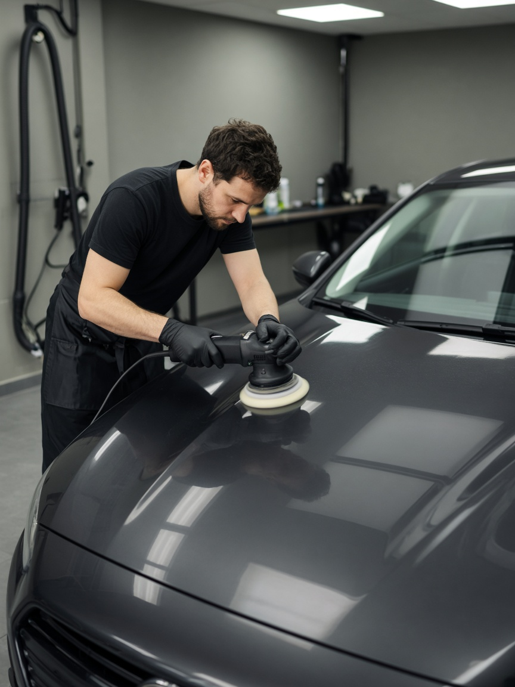

Hero background video: a Fullsteam sizzle reel.
We Acquire Great Vertical Software
And build industry-defining technology.
Building on Great.
-
Acquire
We acquire system of record vertical software at the heart of a customer’s operations.
70,000
customers who rely on our software… and counting
-
Grow
We expand opportunities with AI, embedded fintech, and operational excellence.
$75B
processed by Fullsteam
28th
largest processor in the USA (according to Nilson)
-
Lead
Modern, AI-ready platforms that set the pace for their industries.
19
market leading products
100%
adoption of AIDLC across verticals
Practical AI, from code to customer.
-
Utilize AI product development standards
Agentic development (AIDLC) provides faster time to market and increased capacity.
-
Build new AI customer-facing features
Create AI features in-product that customers want.
-
Automate business workflows
Automate repetitive work so teams can focus on products, customers, and growth.
Essential software for key industries.

Automotive cars serviced annually by our customers Learn more All verticals vertical software businesses, each a category leader in its own market. Explore all verticalsAcquisition is just the first step
Building on great means we work together to grow your business. We believe customers are best served with agentic product development and embedded fintech products.
What happens after acquisition?
1 / 3
See how we build on great.
Hiring? See Careers